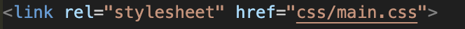
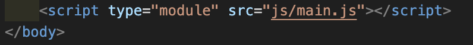
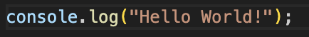
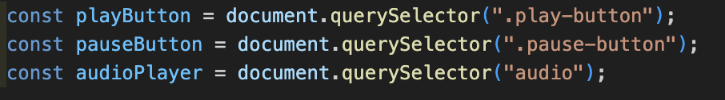
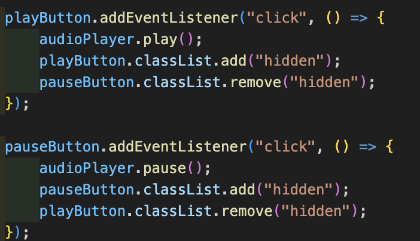

Volg hieronder de stappen voor de applicatie na te maken van scratch!
Stap 1: Configuratie & Mappenstructuur
Configuratie
Voor het maken van deze applicatie gaan we een code editor gebruiken,
in deze applicatie gebruiken we Visual Code Studio.
Dit is een gratis code editor die je kan downloaden via de website van Microsoft.
Op basis van je operating system kan je de juiste versie downloaden op deze link
Eens je dit gedownload zal je account moeten maken, dit kan je doen via de website van Microsoft.
Voor we beginnen met code zal je eerst een extensie nodig hebben die al je wijzingen van je code visueel weergeeft op je HTML pagina.
Deze extensie ziet er zo uit
Als je deze extensie hebt gevonden mag je gewoon simpelweg op "install" klikken
Goed! Nu dat we dit hebben kunnen we beginnen met onze mappenstructuur
Mappenstructuur
Eens je Visual Studio Code hebt geopend kun je beginnen aan je mappenstructuur.
Maak de volgende folders aan:
CSS -> Hier komen je styling bestanden
JS -> Hier komen je script bestanden
Assets -> Hier komen je afbeeldingen, audio bestanden en andere assets
Assets/images -> Hier komen je afbeeldingen
Assets/audio -> Hier komen je audio bestanden
Assets/favicon -> Hier komt je favicon (icoon naast je title aan je tablad van je browser van boven) ->
Assets/fonts -> Hier komen je lettertypes
Eens deze folders zijn gemaakt kunnen we overgaan naar stap 2
Stap 2: HTML
HTML
2.1
Html is een codetaal die als basis wordt gebruikt om tekst te displayen op je web-pagina.
Html wordt "semantisch" gestructueerd, dit wil zeggen dat er een duidelijke chronologische structuur moet zitten in je elementen, (header, main-content, footer...)
Elke codetaal heeft zijn eigen syntax om code te declareren, bij html wordt dit gedaan met "open" en "close" tags
Voorbeeld van HTML-code
Om te beginnen met onze applicatie moet je eerst een html bestand hebben waarin je kunt coderen
Maak dus een nieuw bestand aan in de root (buiten alle folders) en noem dit "index.html", eens je in dit bestand zit duw dan op "!" op je toetsenbord en druk op enter
Nu zie je een basis template waar je verder op kan bouwen om je applicatie te maken.
Je kan al beginnen met je web-pagina een titel te geven, type een naam tussen de open & close tag van de "title"
2.2
We zullen beginnen met onze header, hierin komen onze hoofdelementen die meestal terugkomen op meerdere pagina's. (navigatie, titel...)
Als logo kun je een afbeelding in de assets/images folder zetten en het juiste pad hier naartoe linken in de src="" binnnen de img tag.
Je kunt ook de titel van je applicatie veranderen door simpelweg de naam te veranderen in je h1 tag.
2.3
Nu kunnen we overgaan naar onze muziek bibliotheek,
Maak eerst een main tag aan met een lege section in
Hierna gaan we per liedje een article tag gebruiken voor elk liedje apart weer te geven
Per liedje gaan we een afbeelding, audio-bestand, en naam meegeven waarin je de artiest en naam van het liedje kan vermelden
We zullen eerst een leeg article maken zonder data in, dit doe je zo in volgend code fragment.
Voeg mp3 of wav. bestanden toe in je assets/audio folder, je kunt audio converteren van youtube naar een mp3 file hier
Voeg song covers toe in je assets/images folder
Zorg ook ervoor dat je een "play" en een "pause" icoontje in je assets/images folder
Voeg nu je bestanden allemaal toe in je article
Je ziet binnen je img tag een "src", het is de bedoeling dat je hier binnen een pad verwijst naar je gewenst bestand dat je daar wilt in laden
Vul de src van je audio tag in met het juiste pad naar je audio bestand
Vul de src van je song-cover in met het juiste pad naar je afbeelding
Vul de src van je play en pause button in met het juiste pad naar je play en pause icoontjes
Voeg de naam van de artiest en het nummer toe in de p tag bv "artiest" - "naam van liedje"
Je kan meerdere liedjes aanmaken in je bibliotheek door bovenstaande gewoon je volledige article te copy-pasten maar dan met andere data.
Nu dat we dit hebben kunnen we overgaan naar stap 3, de styling.
Stap 3: CSS
CSS
3.1
CSS is een codetaal die wordt gebruikt om de styling van je web-pagina te bepalen.
CSS kan je gebruiken om kleuren, lettertypes, groottes, en nog veel meer te bepalen.
Om CSS toe te voegen aan je HTML bestand moet je eerst een CSS bestand aanmaken in je CSS folder, noem dit "main.css".
Link vervolgens dit bestand in je HTML bestand door de volgende code toe te voegen binnen je head tag van je HTML bestand:

We gaan eerst testen of onze CSS goed is gelinkt met onze HTML,
dit kun je doen door je body (volledige pagina) een achtergrondkleur te geven.
Dit doe je door de volgende code toe te voegen in je main.css bestand:
nu zouden alle songs mooi naast elkaar moeten staan en zou elke song in een kadertje moeten staan.
Stap 4: Javascript
Javascript
4.1
Javascript is een codetaal die wordt gebruikt om de functionaliteit van je web-pagina te bepalen.
Javascript kan je gebruiken om knoppen, sliders, en nog veel meer te maken.
In ons geval gaan we Javascript gebruiken om onze audio-bestanden af te spelen.
Om Javascript toe te voegen aan je HTML bestand moet je eerst een JS bestand aanmaken in je JS folder, noem dit "main.js".
Link vervolgens dit bestand in je HTML bestand door de volgende code toe te voegen net boven je sluitende body tag:

We gaan eerst testen of onze JS goed is gelinkt met onze HTML,
dit kun je doen door een console.log toe te voegen in je main.js bestand:

Klik dan rechtermuisklik op je web-pagina en klik op "inspecteren" of "inspect" en ga naar de console tab.
Als je "Hello World!" ziet staan in de console, is je JS goed gelinkt.
4.2
In javascript werken we ook met variabelen, we kunnne data uit onze html halen door de juiste elementen te selecteren.
In ons geval gaan we de play en pause knoppen selecteren en de audio tag.
Een variabele kan je aanmaken door "let" of "const" te gebruiken, dit is een keyword dat je gebruikt om een variabele aan te maken.
Aangezien wij 3 elementen hebben gaan we 3 variabelen aanmaken.
Dit doe je door de volgende code toe te voegen in je main.js bestand:

4.3
Nu gaan "event listeners" toevoegen aan onze play en pause knoppen.
Dit wil zeggen dat we gaan luisteren naar de knoppen en als we erop klikken dat we dan een functie gaan uitvoeren.
In deze logica gaan we de audio tag afspelen als we op de play knop klikken en de audio tag pauzeren als we op de pause knop klikken.
Dit doen we door de volgende code toe te voegen in je main.js bestand:

4.4
Nu is er nog 1 probleem, we "targetten" maar 1 song omdat we maar 1 audio tag hebben geselecteerd.
Dit willen we oplossen door een loop te maken die door alle audio tags gaat en de juiste audio tag selecteert.
Een loop is een manier om door een lijst van elementen te gaan en iets te doen met elk element.
Dit doen we door de volgende code toe te voegen in je main.js bestand:
Nu zou je normaal elk liedje moeten kunnen afspelen door op de play knop te klikken en pauzeren door op de pause knop te klikken als je song-article met data gevuld is.
Proficiat! Je hebt nu een werkende muziek applicatie gemaakt van scratch!
.png)